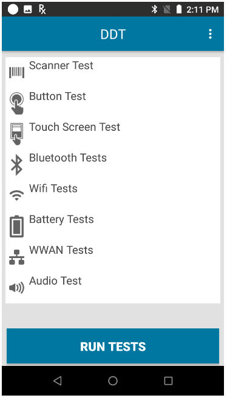

Überblick
Device Diagnostic Tool unterstützt zwei Betriebsmodi:
- Administratormodus – Administratoren können auf App-Einstellungen zugreifen, Testkonfigurationen ändern und einzelne Tests ausführen. Dies ist der Standardmodus.
- Benutzermodus – Benutzer können nur Tests ausführen. Der Zugriff auf App-Einstellungen oder Testkonfigurationen sowie die Auswahl einzelner Tests ist ihnen nicht möglich. Zum Aktivieren des Benutzermodus setzen Sie den Parameter admin_mode auf „false“ (falsch) (siehe Abschnitt Konfiguration).
Starten der App
Es gibt verschiedene Möglichkeiten zum Starten von Device Diagnostic Tool:
- Manuell über die Benutzeroberfläche – der Benutzer startet Device Diagnostic Tool manuell und führt dann die Tests aus. Siehe Abschnitt Benutzeroberfläche unten.
- Per Fernzugriff über ein EMM-System (Enterprise Mobility Management) – über folgenden Befehl wird Device Diagnostic Tool im Hintergrund gestartet und die Protokollfunktion aktiviert:
adb shell am broadcast -n "com.symbol.selfdiagnostics/com.symbol.selfdiagnostics.SESReceiver"
Es darf nur eine der genannten Methoden zum Starten von Device Diagnostic Tool verwendet werden. Andernfalls kann ein unerwartetes Verhalten der App die Folge sein.
Gerätetests
Beim ersten Starten der App werden auf der Hauptseite die verfügbaren Tests aufgelistet:

Hauptseite
Wenn bereits Tests ausgeführt wurden, ist neben dem Namen des Tests das Datum der letzten Ausführung angegeben.
Tippen Sie auf der Hauptseite auf Tests starten, um alle Tests auszuführen. Welche Tests ausgeführt werden, richtet sich nach der Auswahl auf der Seite Tests konfigurieren. Bei den folgenden Tests wird der Benutzer aufgefordert, zusätzliche Aktionen auszuführen: Scannertest, Tastentest, Touchscreen-Test und Audio-Test. Es wird empfohlen, sämtliche Tests im normalen Gerätebetrieb auszuführen, und nicht, während es sich in einer Dockingstation befindet oder über ein USB-Kabel mit einem Computer verbunden ist. Nach Abschluss der Tests werden die Ergebnisse angezeigt:
 Bestanden – der Test wurde ausgeführt und das Ergebnis entsprach den Testkriterien.
Bestanden – der Test wurde ausgeführt und das Ergebnis entsprach den Testkriterien.
 Fehlgeschlagen – der Test wurde ausgeführt und das Ergebnis entsprach nicht den Testkriterien.
Fehlgeschlagen – der Test wurde ausgeführt und das Ergebnis entsprach nicht den Testkriterien.
 Informationen – Daten wurden abgerufen und werden angezeigt.
Informationen – Daten wurden abgerufen und werden angezeigt.
Im Administratormodus ist es auch möglich, einzelne Testkategorien auszuwählen und dann auf Tests starten zu tippen, um nur die ausgewählten Tests auszuführen.
Bei Test fehlgeschlagen und Test-Timeout wird das gleiche rote Symbol angezeigt.
Die Option Hilfe kann auf der Hauptseite über das Menü oben rechts aufgerufen werden. Sie öffnet das Support-Portal für Device Diagnostic Tool.
Scannertest
Der Benutzer wird aufgefordert, einen Barcode zu scannen. Ergebnisse:
- Scannertest – Anzeige der Barcode-Daten
- Etikettentyp – Anzeige des gescannten Barcode-Typs oder Decoders
Hinweis: Bei der Ausführung des Scannertests auf dem TC55 muss der Scan-Auslöser länger gedrückt gehalten werden, damit das Auslösen erkannt wird.
Tastentest
Der Benutzer wird aufgefordert, die physischen Tasten am Gerät zu drücken: Scan-Auslöser (links oder rechts), Push-to-Talk, Lautstärke (lauter/leiser). Ergebnisse:
- Tastentest – Test erfolgreich, Test fehlgeschlagen oder Test-Timeout
Hinweis: Wenn die Funktionszuweisung für Tasten geändert wurde, kann es beim Tastentest zu unerwartetem Verhalten kommen.
Touchscreen-Test
Der Benutzer wird aufgefordert, jede Rasterzelle auf dem Bildschirm zu berühren.
- Touchscreen-Test – Test erfolgreich, Test fehlgeschlagen oder Test-Timeout
Bluetooth-Tests
Überprüfung der Funktionsfähigkeit des Bluetooth-Funkmoduls mit Bereitstellung von relevanten Bluetooth-Informationen Ergebnisse:
- Name – Anzeige des Bluetooth-Namens
- Funkmodul-Einschalttest – Test erfolgreich oder Test fehlgeschlagen. Der Status des Funkmoduls vor diesem Test wird beibehalten.
- Funktionsfähig/Nicht funktionsfähig – Funktionsfähig oder Nicht funktionsfähig
- Sichtbar/Verbindung möglich – Verbindung möglich, Sichtbar oder –
WLAN-Tests
Überprüfung der Funktionsfähigkeit des WLAN-Funkmoduls mit Bereitstellung von relevanten WLAN-Informationen Ergebnisse:
- MAC-Adresse – Gültig oder Ungültig
- Netzwerktest – Verbunden oder Nicht verbunden; der Test schlägt fehl, wenn keine Netzwerkverbindung besteht. Der Status des Funkmoduls vor diesem Test wird beibehalten. Wenn der Test erfolgreich ist, werden die folgenden Werte angezeigt:
- Stärke – Anzeige der Signalstärke
- IP – Anzeige der IP-Adresse
- BSSID – Gültig oder Ungültig
- Geschwindigkeit – Anzeige der Verbindungsgeschwindigkeit
Akkutest
Überprüfung des Akkustatus mit Bereitstellung von relevanten Akkuinformationen Ergebnisse:
- Artikelnummer – Anzeige der Artikelnummer
- Seriennummer – Anzeige der Seriennummer
- Herstellungsdatum – Anzeige des Herstellungsdatums des Akkus
- Decommission Status (Außerbetriebnahme-Status) – Anzeige des Akkustatus:
- Gut – der Zustand des Akkus ist gut.
- Need to replace battery (Akku-Austausch erforderlich) – die Anzahl von Akkuladezyklen hat den festgelegten Akku-Schwellenwert erreicht. Der Akku sollte bald durch einen neuen Akku ersetzt werden.
- Unbekannt – beim Abrufen der Informationen zum Akkuzustand ist ein Problem aufgetreten.
- Spannung – Anzeige der Stromspannung
- Stromstärke – Anzeige der Stromstärke
- Temperatur – Anzeige der Temperatur
- Akkustand – Anzeige des Akkuladestands in Prozent (%)
- Aktuelle Kapazität – Anzeige der im Akku verfügbaren Energie in mAh (Milliamperestunden). Dies wird nur mit PowerPrecision+-Akkus unterstützt.
WWAN-Test
Überprüfung der Funktionsfähigkeit des WWAN-Funkmoduls mit Bereitstellung von relevanten WWAN-Informationen Ergebnisse:
- SIM-Status – der Flugmodus muss deaktiviert sein. Einer der folgenden Werte wird angezeigt:
- Vorhanden – eine SIM-Karte ist vorhanden.
- Fehlt – es ist keine SIM-Karte vorhanden.
- Sprachstatus – einer der folgenden Werte wird angezeigt:
- Sprachdienst aktiviert
- Sprachdienst deaktiviert
- Sprache nur bei Notfall
- Sprache ausgeschaltet
- Unbekannter Sprachstatus
- Datenstatus – einer der folgenden Werte wird angezeigt:
- Datenverbindung vorhanden
- Keine Datenverbindung
- Datenverbindung wird hergestellt
- Datenverbindung ausgesetzt
- Unbekannter Datenstatus
- WAN-Typ – Anzeige des Netzwerktyps: LTE, 2G, 3G, 4G oder Nicht verfügbar
- Signalstärke – einer der folgenden Werte wird angezeigt:
- Nicht zutreffend – keine SIM-Karte vorhanden
- Unbekannt – das Gerät befindet sich möglicherweise im Flugmodus.
- Signalstärke – Anzeige der Signalstärke in dBm
- Telefonnummer – Gültig oder Ungültig, je nachdem, ob die Rufnummer vergeben ist oder nicht.
- Geräte-ID – Gültig oder Ungültig, je nachdem, ob die Geräte-ID vergeben ist oder nicht.
Audio-Test
Überprüfung der Funktionsfähigkeit von Mikrofon und Lautsprecher des Geräts Ergebnisse:
- Audio-Test – Test erfolgreich oder Test fehlgeschlagen
Hochladen von Protokollen
Die Konfigurationsdatei und die Protokolldateien können bei Bedarf vom Gerät auf einen FTP-Server hochgeladen werden. Dies betrifft folgende Dateien: Testergebnisse, configuration.xml, history.log und status.log. Zum Zugriff auf diese Funktion tippen Sie auf der Hauptseite der App oben rechts auf das Optionsmenü und wählen dort Hochladen aus.
Optionen auf der Seite „Hochladen“:
- Protokoll – „FTP“ (Standardwert und einzige verfügbare Option)
- IP-Adresse – geben Sie die IP-Adresse des Servers ein (erforderlich).
- Benutzername – geben Sie den für die Anmeldung beim Server erforderlichen Benutzernamen ein (erforderlich).
- Datei von Gerät löschen – ist diese Option aktiviert, werden nach dem Hochladen sämtliche Dateien (Konfigurationsdatei und Protokolldateien) vom Gerät gelöscht.
Falls auf der Seite „Einstellungen“ die Server-Details eingegeben wurden, werden diese Optionen automatisch übernommen und können bei Bedarf angepasst werden.
Tippen Sie nach Eingabe der entsprechenden Daten auf Hochladen. Geben Sie bei Aufforderung das FTP-Kennwort ein. War die Anmeldung erfolgreich, werden die Dateien in einer ZIP-Datei auf den FTP-Server hochgeladen. Der Name dieser ZIP-Datei hat folgendes Format: DDTLOG_[TimeStamp(ddMMyyyyHHmmss)]_[device_identifier].zip. Er besteht aus folgenden Elementen:
- [TimeStamp(ddMMyyyyHHmmss)] – Datum und Uhrzeit: 2 Ziffern für den Tag, 2 Ziffern für den Monat, 4 Ziffern für das Jahr, 2 Ziffern für die Stunde, 2 Ziffern für die Minuten und 2 Ziffern für die Sekunden
- [device_identifier] – die eindeutige Geräte-ID; je nach Android-Version wird einer der folgenden Werte verwendet:
- UUID – bei Geräten mit Android 10 und höher
- Seriennummer – bei Geräten mit Android Oreo und darunter
Planung von Aufträgen
Gerätetests können zur Ausführung zu einem bestimmten Zeitpunkt geplant werden. Geplante Aufträge werden automatisch wöchentlich zum festgelegten Zeitpunkt wiederholt. Sollte die Wiederholung nicht gewünscht sein, ist es möglich, den Auftrag nach der ersten Ausführung automatisch löschen zu lassen. Die Planung ist nur für solche Gerätetests möglich, bei denen keine Benutzereingriffe erforderlich sind. Sobald ein geplanter Auftrag abgeschlossen ist, wird dies in der Datei /storage/emulated/0/Android/data/com.symbol.selfdiagnostics/files/history.log protokolliert.
Planen eines Auftrags:
- Tippen Sie auf der Hauptseite der App oben rechts auf das Optionsmenü und wählen Sie dort Auftragsplanung aus.
- Tippen Sie auf der Seite „Auftragsplanung“ auf die Schaltfläche „+“, um einen Auftrag zu erstellen.
- Geben Sie den gewünschten Zeitpunkt der Ausführung in Stunden/Minuten an.
- Wählen Sie den Gerätetest aus, der ausgeführt werden soll.
- Wählen Sie den Wochentag aus, an dem der Test ausgeführt werden soll.
- Tippen Sie oben rechts auf das Speichern-Symbol.
Ändern eines geplanten Auftrags:
- Tippen Sie auf der Seite „Auftragsplanung“ in der Liste auf den gewünschten geplanten Auftrag.
- Nehmen Sie die gewünschten Änderungen vor.
- Tippen Sie oben rechts auf das Speichern-Symbol.
Löschen eines geplanten Auftrags:
- Tippen Sie auf der Seite „Auftragsplanung“ in der Liste auf den gewünschten geplanten Auftrag.
- Tippen Sie oben rechts auf das Papierkorb-Symbol.